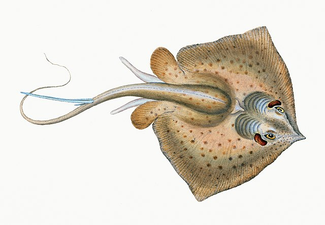
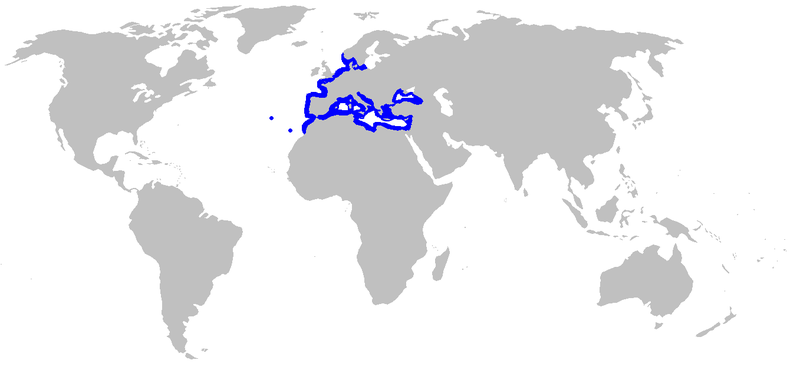

Предишна страница Риба Баба, Белица Есетра
 
Смело може да се каже, че Черно море е най-безопасното море! В него не живеят агресивни към човека видове, които да нападат и убиват умишлено. Но има няколко негови обитатели, макар и срещани по дивите и ненаселени брегове, които ако бъдат настъпани, хванати или притеснени могат да бъдат опасни. За всеки един от тях ще има статия в сайта, която ще добавям поетапно. Един от малкото, и потенциално най-опасният вид по черноморието е Морската котка /Dasyatis pastinaca/. Типичен представител на подраздел скатови от семейство плоски акулови. Хрущялна, гладка, без люспи. Ромбовидно тяло. Гръбната страна е леко изпъкнала, а коремната - плоска. Липсва гръбна и опашна перка. Опашката е нишковидна, издължена с форма на камшик, притежава назъбен и остър шип. Цвета и варира между тъмножълто-кафяв, тъмносин до сив, а корема и е бял. Цвета и имитира засенчване на морското дъно. В Черно море размерите и най-често достигат около един метър и тегло около 10 килограма, но са улавяни и екземпляри над 30 килограма. Най-големият екземпляр от този вид, с внушителните 201,39 кг. е уловен край Азорските острови. Характерен обитател на Атлантическия океан, европейското и африканското крайбрежие на Средиземно море. Често се среща и в Черно море.
Подобно на своите роднини акулите, морската котка е оборудвана със сензори. Разположени около устата ѝ, те улавят естествените електрически трептения на потенциална плячка. Притежава 27 000 рецептора за усещане на храната.Размножителният период започва през юли и продължава до края на август. Ражда малките си, които обикновено са от 4 до 12 от оплодени яйцеклетки. Те се хранят подобно на бозайниците чрез хранителна плацента. Инкубацията продължава четири месеца.
Внимание! Ловът на морската котка не се извършва от неопитни рибари.